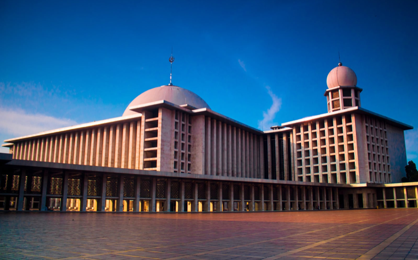
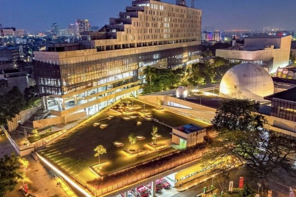
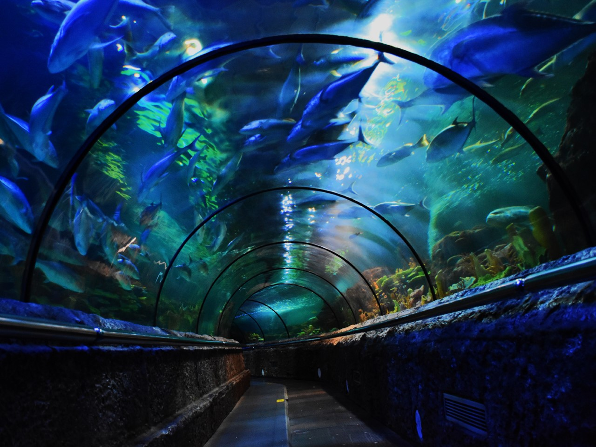

Jelajahi keindahan kota jakarta melalui peta interaktif. Website ini menyediakan lokasi
tempat wisata dan
informasi mendalam tentang setiap destinasi.
about
Selamat datang di JAK TOURISM, platform eksplorasi interaktif yang didedikasikan untuk
mengungkap keajaiban destinasi
pariwisata di Jakarta dengan memadukan teknologi
Geographical Information System (GIS) dengan informasi mendalam tentang setiap tempat
wisata. Di JAK TOURISM,
setiap sudut kota memiliki kisahnya sendiri, dan webGIS ini berupaya untuk membagikan pesona
dan keunikan
Jakarta melalui panduan visual dan informasi praktis.
Destination
this webGIS present a number of amazing destinations that captivate the heart and stimulate the
imagination. Let's explore some
of the destinations that await you
MUSEUM MACAN Budaya
Museum Seni Modern dan Kontemporer di Nusantara, yang lebih dikenal dengan
nama Museum MACAN, merupakan sebuah
lembaga seni di Jakarta. Museum ini berperan dalam memberikan kesempatan
kepada masyarakat umum untuk mengakses
koleksi seni modern dan kontemporer yang berharga dan terus berkembang, baik
dari Indonesia maupun dari berbagai
belahan dunia. Museum MACAN menyelenggarakan beragam pameran dan kegiatan di
gedung seluas 7.100 meter persegi, yang
juga mencakup area pendidikan dan konservasi.
Jakarta Aquarium Rekreasi
Jakarta Aquarium Safari adalah objek wisata konservasi satwa terbesar yang
terletak dalam mal pertama di
Indonesia, yang
telah berdiri sejak tahun 2016. Dengan luas mencapai 1 hektar, Jakarta Aquarium
menyelenggarakan koleksi
sebanyak 3.500
spesies hewan, termasuk sepuluh jenis hewan yang meliputi Meerkat, Black & White
Ruffed Lemur, Eagle Ray,
Giant Moray
Eel, Blue Tang Fish, Humboldt Penguin, Macaw Bird, Sea Horse, Kissing Gourami,
dan Nurse Shark.
Kota tua Sejarah
Kota Tua Jakarta, yang juga dikenal sebagai Batavia Lama (Oud Batavia),
merupakan sebuah daerah kecil di
Jakarta,
Indonesia. Kawasan ini memiliki luas sekitar 1,3 kilometer persegi. Pada abad
ke-16, para pelaut Eropa
menyebutnya
sebagai "Permata Asia" dan "Ratu dari Timur.". Pada tahun 1972, Gubernur
Jakarta, Ali Sadikin, mengeluarkan
dekret yang
secara resmi menetapkan Kota Tua sebagai situs warisan. Langkah yang diambil
oleh gubernur ini bertujuan
untuk menjaga
dan melindungi sejarah arsitektur kota, khususnya bangunan yang masih ada di
wilayah tersebut.
HUTAN KOTA SRENGSENG Alam
Hutan Kota Srengseng pada mulanya merupakan sebuah tempat pembuangan akhir
sampah, yang kemudian diubah fungsinya oleh
pemerintah DKI Jakarta menjadi Ruang Terbuka Hijau (RTH). Hutan Kota
Srengseng kemudian ditetapkan sebagai Hutan kota melalui SK Gubernur DKI Jakarta
nomor 202 tahun 1955. Yang berisi
mengenai kawasan Hutan Kota Srengseng difungsikan sebagai daerah resapan air,
pengawetan plasma nuftah, tempat wisata,
dll. Pembangunan kawasan ini sudah dimulai sedari tahun 1993, dan persiapan
seperti pembebasan tanah dimulai sejak tahun
1986.
WATERSPLASH CITRA 2 Rekreasi
Kolam Renang Citra 2 merupakan Waterpark yang diresmikan pada tahun 2019 lalu.
Kolam renang ini emiliki 2 bagian. Pada
bagian 1, letaknya berada di area sport center milik Ciputra World, biasanya
bagian 1 ini digunakan oleh para
profesional. Beda halnya dengan area bagian 2 yang lebih cocok untuk berlibur
bersama keluarga dikarenakan terdapat
banyak wahana air yang rramah untuk anak-anak.
Monumen Nasional Sejarah
Monumen Nasional, yang lebih dikenal dengan sebutan Monas atau Tugu Monas,
adalah sebuah monumen setinggi 132 meter yang
didirikan untuk memperingati dan menghormati perjuangan rakyat Indonesia dalam
merebut kemerdekaan dari pemerintahan
kolonial Hindia Belanda. Proyek pembangunan monumen ini dimulai pada tanggal 17
Agustus 1961 di bawah pimpinan Presiden
Sukarno, dan menjadi akses bagi masyarakat umum pada tanggal 12 Juli 1975.

Masjid Istiqlal Religi
Masjid Istiqlal adalah masjid terbesar di Indonesia saat ini, memiliki luas
bangunan mencapai 24.20 meter persegi, dan
didirikan di atas tanah seluas 98.247 meter persegi. Masjid ini merupakan salah
satu simbol Jakarta dan berlokasi
berseberangan dengan Gereja Katedral dan Gereja Imanuel. Dalam sejarah Islam di
Indonesia, Masjid Istiqlal memiliki
definisi penting sebagai sebuah struktur dengan nilai-nilai yang beragam,
termasuk dalam hal pendidikan, ilmu
pengetahuan, dan aspek keagamaan.
Museum Sumpah Pemuda Sejarah
Pemerintah Daerah (Pemda) DKI Jakarta melakukan pemugaran Gedung Kramat 106 pada
tanggal 3 April 1973. Kemudian gedung
ini berubah fungsi menjadi sebuah museum yang diberi nama Gedung Sumpah Pemuda.
Gedung ini dijadikan museum karena
mengandung sejarah yang menjadi saksi perjalanan panjang dalam perjuangan
kemerdekaan Indonesia. Disini pula, Kongres
Pemuda Kedua dilaksanakan, dirumuskan, dan selanjutnya diikrarkan.

taman ismail marzuki Sejarah
Taman Ismail Marzuki (TIM) merupakan salah satu ikon seni dan budaya di Jakarta,
Indonesia. Terletak di kawasan Cikini,
taman ini dinamai sesuai dengan nama seorang seniman besar Indonesia, yaitu
Ismail Marzuki, yang dikenal sebagai maestro
musik dan pencipta lagu-lagu kenangan. Narasi tentang Taman Ismail Marzuki tidak
hanya memaparkan keindahan fisik taman
tersebut, tetapi juga mencerminkan keberagaman seni dan budaya yang diwakili
oleh berbagai fasilitas yang ada di
dalamnya.
Ragunan Konservasi
Pada tanggal 19 September 1864, Taman Margasatwa Ragunan berdiri di Batavia
(sekarang Jakarta) dengan nama "Planten en
Dierentuin" dan pertama kali dikelola oleh organisasi yang peduli terhadap
tumbuhan dan hewan di Batavia, yang disebut
Culture Vereniging Planten en Dierentuin di Batavia. Taman Margasatwa Ragunan
ini memiliki luas 147 hektar dan dihuni
lebih dari 2.009 ekor satwa serta ditumbuhi lebih dari 20.000 pohon, sehingga
didalamnya terdapat beranekaragam hayati
dengan nilai konservasi yang tinggi.
kidzania Edukasi
KidZania Jakarta adalah pusat rekreasi waralaba asal Meksiko yang menawarkan
pengalaman bermain dan pembelajaran bagi
anak-anak usia taman kanak-kanak hingga sekolah dasar. Dengan konsep replika
kota dalam skala anak-anak, tempat rekreasi
ini mencakup jalan, bangunan, ritel, dan berbagai kendaraan di sekitar kota
mini. KidZania Jakarta merupakan waralaba
pertama di Asia Tenggara dan kedua di luar Meksiko setelah Jepang. Berdiri sejak
November 2007, dikelola oleh PT Aryan
Indonesia yang dimiliki oleh pasangan suami-istri Roestriana Adrianti dan
Mohammad Riza Chalid dengan investasi besar.
museum satria mandala Sejarah
Kawasan Museum Satria Mandala bukan hanya berfungsi sebagai tempat pendidikan,
tetapi juga tempat pembelajaran yang
memungkinkan pengunjung untuk merasakan suasana dan pengalaman yang berbeda.
Museum Satria Mandala juga menggabungkan
konsep wisata terpadu dengan berbagai fasilitas seperti taman kota yang nyaman,
fasilitas ibadah, kuliner, dan tempat
duduk santai. Dengan peran Museum Satria Mandala yang berkembang sebagai pusat
preservasi, penelitian, dan komunikasi.
museum layang-layang Budaya
Museum Layang-Layang Indonesia, didirikan oleh Ibu Endang Ernawati, merupakan
sebuah wahana edukasi dan hiburan yang
bertujuan untuk melestarikan dan mempromosikan budaya layang-layang. Ibu Endang
memulai ketertarikan dan kepeduliannya
terhadap budaya layang-layang pada tahun 1980, dan melalui perjalanan waktu, ia
mengumpulkan berbagai jenis
layang-layang, memulai Merindo Kite and Gallery pada tahun 1985, dan akhirnya
mendirikan Museum Layang-Layang Indonesia
pada tahun 2003.
setu babakan betawi Budaya
Perkampungan Budaya Betawi Setu Babakan adalah salah satu tempat yang
dikhususkan menjadi ruang reka cipta sebagai
dapurnya Budaya Betawi. Di sana pengunjung dapat melihat dan berinteraksi dengan
Kebudayaan Betawi baik fisik maupun non
fisik. Besar harapan kami melalui website ini masyarakat mendapatkan informasi
tentang Budaya Betawi yang lebih lengkap
dan akurat dan bisa menjadi panduan anda mengenal Budaya Betawi lebih jauh.
TMII Edukasi
Taman Mini Indonesia Indah, yang biasa disebut sebagai TMII, adalah sebuah
kompleks taman hiburan yang mengusung tema
budaya Indonesia di bagian Timur Jakarta, DKI Jakarta. Kompleks ini mencakup
luas wilayah sekitar 150 hektare atau
setara dengan 1,5 kilometer persegi. TMII merangkum kekayaan budaya bangsa
Indonesia dengan memperlihatkan aspek
kehidupan sehari-hari dari 26 provinsi di Indonesia pada tahun 1975.
monumen pancasila sakti Sejarah
Pada 29 Maret 2018 lalu, Tim Pemetaan Cagar Budaya dari Direktorat Pelestarian
Cagar Budaya dan Permuseuman
mendokumentasikan Kompleks Monumen Pancasila Sakti. Kompleks ini didirikan
sebagai tanda peringatan peristiwa pembunuhan
sejumlah petinggi TNI Angkatan Darat pada tanggal 30 September 1965, yang lebih
dikenal sebagai Peristiwa Gerakan 30
September 1965/Partai Komunis Indonesia (G30S/PKI).
Taman Agro Wisata Rekreasi
Taman Agrowisata Cilangkap dimiliki oleh Pemerintah Provinsi DKI Jakarta dan
dikelola oleh Dinas Pertanian dan Kehutanan
yang mempunyai luas sekitar 25 hektar. Di taman ini terdapat fasilitas seperti
arena olahraga, jogging track, arena
bermain anak, hingga danau yang dapat difungsikan sebagai area memancing. Taman
Agrowisata Cilangkap juga memiliki
fungsi sebagai tempat budidaya tanaman serta Hidroponik center di Kawasan
Cilangkap, dengan jenis tanaman seperti pohon
rambutan dan anggrek.
pura aditya jaya Religi
Pura Aditya Jaya Rawangmangun merupakan rumah peribadatan bagi umat Hindu tertua
di Jakarta. Sejarah perjuangan umat
Hindu dalam mendirikan pura ini sebagai tempat persembahyang tentu tidak dapat
terlepas. Pura ini dirintis sejak tahun
50-an oleh Yayasan Pitha Maha, yang kemudian pada tahun 60-an baru mendapat
respon dari pemerintah.
Museum Fauna Indonesia Komodo & Taman Reptil Edukasi
Museum Fauna Indonesia Komodo & Taman Reptil adalah destinasi yang memukau bagi
para pecinta satwa liar dan penggemar
reptil. Terletak di kota yang strategis, museum ini menawarkan pengalaman unik
dalam memahami kehidupan satwa liar
khususnya Komodo, serta berbagai jenis reptil lainnya.
Taman Impian Jaya Ancol Rekreasi
Taman Impian Jaya Ancol adalah sebuah kompleks hiburan yang terletak di Pantai
Utara Jakarta, Indonesia. Kompleks ini
adalah salah satu destinasi rekreasi terbesar dan paling terkenal di Jakarta,
yang menawarkan berbagai hiburan dan
fasilitas bagi pengunjung dari segala usia. Berikut adalah narasi tentang Taman
Impian Jaya Ancol, Taman Impian Jaya
Ancol adalah tempat di mana harapan dan impian berkumpul dalam satu ruang yang
luas dan penuh kegembiraan

sea world Ancol Rekreasi
Sea World Ancol adalah sebuah akuarium yang terletak di Taman Impian Jaya Ancol,
sebuah kompleks hiburan terkenal di
Jakarta, Indonesia. Akuarium ini merupakan salah satu destinasi populer di
Ancol, menawarkan pengunjung pengalaman yang
mendalam dalam eksplorasi kehidupan laut. Sea World Ancol menampilkan berbagai
koleksi biota laut yang menakjubkan,
mulai dari ikan-ikan tropis berwarna-warni hingga hewan laut yang langka. Dengan
berbagai atraksi dan kegiatan yang
ditawarkan, Sea World Ancol menjadi tempat yang populer bagi keluarga dan
pengunjung dari berbagai usia.
Dunia Fantasi (Dufan) Rekreasi
Dufan merupakan tempat wisata hiburan di Taman Impian Jaya Ancol, Jakarta Utara
dan memiliki banyak wahana permainan
serta sebagai kawasan edutainment. Dunia Fantasi merupakan theme park pertama di
Indonesia layaknya Disneyland,
Universal Studios atau Trans Studio. Saat berkunjung ke Dufan Ancol, pengunjung
akan merasakan tema-tema bernuansakan
Indonesia, Jakarta, Asia, Eropa, Amerika, Yunani, Hikayat, dan Kalila.
Taman Mangrove Jakarta Alam
Kawasan Taman Mangrove Jakarta memiliki berbagai potensi yang dapat dikembangkan
dan dimanfaatkan secara beragam. Di
antara
potensi-potensi tersebut adalah daerah pantai yang memiliki daya tarik wisata
bahari, termasuk keindahan panorama pantai
dan kesempatan untuk menjelajahi keindahan laut dengan perahu wisata. Hutan
bakau di kawasan ini juga menjadi atraksi
utama dengan penjelajahan hutan melalui jalan kayu di atas kanopi atau
boardwalk, kesempatan foto hunting, dan
keberagaman jenis burung pantai yang hidup.
Suaka Margasatwa Muara Angke Konservasi
Suaka Margasatwa Muara Angke memiliki empat tipe habitat yang berbeda, di mana
yang paling mendominasi adalah tumbuhan
Rhizophora. Namun, wilayah yang terluas di kawasan ini adalah rumput dan semak
belukar. Daerah dengan tanah kering
(semak belukar) dapat ditemukan di sebelah barat Sungai Angke, dengan tumbuhan
yang khas seperti Ketapang (Terminalia
catappa), Akasia (Acacia auriculiformis), Kelapa (Cocos nucifera), dan lainnya.
Cagar Alam Pulau Bokor Konservasi
Pulau ini merupakan pulau tanpa hutan mangrove dengan pantai berpasir putih.
Tumbuhan yang tumbuh di Cagar Alam Pulau
Bokor termasuk jenis pohon pantai seperti Kepuh, Ketapang, Asam, dan Melinjo.
Meskipun letaknya relatif dekat dengan
Suaka Margasatwa Pulau Rambut, Cagar Alam Pulau Bokor tidak banyak dihuni oleh
burung-burung air, dan yang lebih umum
ditemui adalah primata jenis Kera Ekor Panjang, yang merupakan hewan yang
diperkenalkan ke kawasan tersebut.
Grand Indonesia Mall Belanja
Grand Indonesia Mall, sebuah pusat perbelanjaan mewah dan ikonik yang terletak
di jantung Jakarta, menyajikan pengalaman
berbelanja yang tak tertandingi. Begitu Anda melangkah masuk, Anda disambut oleh
desain arsitektur yang elegan dan
modern, menciptakan atmosfer yang memikat sejak awal.
Senayan City Belanja
Senayan City, pusat gaya hidup dan perbelanjaan terkemuka yang menghadirkan
keanggunan dan kemewahan di tengah jantung
Jakarta. Saat Anda melangkah masuk ke dalam arena gemerlap ini, Anda akan
dihadapkan pada harmoni antara arsitektur
modern dan kenyamanan, menciptakan atmosfer yang eksklusif dan mengundang.
Destination
this webGIS present a number of amazing destinations that captivate the heart and stimulate the
imagination. Let's
explore some
of the destinations that await you
MUSEUM MACAN Budaya
Museum Seni Modern dan Kontemporer di Nusantara, yang lebih dikenal dengan
nama Museum MACAN, merupakan sebuah
lembaga seni di Jakarta. Museum ini berperan dalam memberikan kesempatan
kepada masyarakat umum untuk mengakses
koleksi seni modern dan kontemporer yang berharga dan terus berkembang, baik
dari Indonesia maupun dari berbagai
belahan dunia. Museum MACAN menyelenggarakan beragam pameran dan kegiatan di
gedung seluas 7.100 meter persegi, yang
juga mencakup area pendidikan dan konservasi.
Jakarta Aquarium Rekreasi
Jakarta Aquarium Safari adalah objek wisata konservasi satwa terbesar yang
terletak dalam mal pertama di Indonesia, yang
telah berdiri sejak tahun 2016. Dengan luas mencapai 1 hektar, Jakarta
Aquarium menyelenggarakan koleksi sebanyak 3.500
spesies hewan, termasuk sepuluh jenis hewan yang meliputi Meerkat, Black &
White Ruffed Lemur, Eagle Ray, Giant Moray
Eel, Blue Tang Fish, Humboldt Penguin, Macaw Bird, Sea Horse, Kissing
Gourami, dan Nurse Shark.
Kota tua Sejarah
Kota Tua Jakarta, yang juga dikenal sebagai Batavia Lama (Oud Batavia),
merupakan sebuah daerah kecil di Jakarta,
Indonesia. Kawasan ini memiliki luas sekitar 1,3 kilometer persegi. Pada
abad ke-16, para pelaut Eropa menyebutnya
sebagai "Permata Asia" dan "Ratu dari Timur.". Pada tahun 1972, Gubernur
Jakarta, Ali Sadikin, mengeluarkan dekret yang
secara resmi menetapkan Kota Tua sebagai situs warisan. Langkah yang diambil
oleh gubernur ini bertujuan untuk menjaga
dan melindungi sejarah arsitektur kota, khususnya bangunan yang masih ada di
wilayah tersebut.
HUTAN KOTA SRENGSENG Alam
Hutan Kota Srengseng pada mulanya merupakan sebuah tempat pembuangan akhir
sampah, yang kemudian diubah
fungsinya oleh
pemerintah DKI Jakarta menjadi Ruang Terbuka Hijau (RTH). Hutan Kota
Srengseng kemudian ditetapkan sebagai Hutan kota melalui SK Gubernur DKI
Jakarta nomor 202 tahun 1955. Yang
berisi
mengenai kawasan Hutan Kota Srengseng difungsikan sebagai daerah resapan
air, pengawetan plasma nuftah,
tempat wisata,
dll. Pembangunan kawasan ini sudah dimulai sedari tahun 1993, dan persiapan
seperti pembebasan tanah dimulai
sejak tahun
1986.
WATERSPLASH CITRA 2 Rekreasi
Kolam Renang Citra 2 merupakan Waterpark yang diresmikan pada tahun 2019
lalu. Kolam renang ini emiliki 2
bagian. Pada
bagian 1, letaknya berada di area sport center milik Ciputra World, biasanya
bagian 1 ini digunakan oleh
para
profesional. Beda halnya dengan area bagian 2 yang lebih cocok untuk
berlibur bersama keluarga dikarenakan
terdapat
banyak wahana air yang rramah untuk anak-anak.
Monumen Nasional Sejarah
Monumen Nasional, yang lebih dikenal dengan sebutan Monas atau Tugu Monas,
adalah sebuah monumen setinggi
132 meter yang
didirikan untuk memperingati dan menghormati perjuangan rakyat Indonesia
dalam merebut kemerdekaan dari
pemerintahan
kolonial Hindia Belanda. Proyek pembangunan monumen ini dimulai pada tanggal
17 Agustus 1961 di bawah
pimpinan Presiden
Sukarno, dan menjadi akses bagi masyarakat umum pada tanggal 12 Juli 1975.
Masjid Istiqlal Religi
Masjid Istiqlal adalah masjid terbesar di Indonesia saat ini, memiliki luas
bangunan mencapai 24.20
meter persegi, dan
didirikan di atas tanah seluas 98.247 meter persegi. Masjid ini merupakan
salah satu simbol Jakarta dan
berlokasi
berseberangan dengan Gereja Katedral dan Gereja Imanuel. Dalam sejarah Islam
di Indonesia, Masjid
Istiqlal memiliki
definisi penting sebagai sebuah struktur dengan nilai-nilai yang beragam,
termasuk dalam hal pendidikan,
ilmu
pengetahuan, dan aspek keagamaan.
Museum Sumpah Pemuda Sejarah
Pemerintah Daerah (Pemda) DKI Jakarta melakukan pemugaran Gedung Kramat 106
pada tanggal 3 April 1973.
Kemudian gedung
ini berubah fungsi menjadi sebuah museum yang diberi nama Gedung Sumpah
Pemuda. Gedung ini dijadikan
museum karena
mengandung sejarah yang menjadi saksi perjalanan panjang dalam perjuangan
kemerdekaan Indonesia. Disini
pula, Kongres
Pemuda Kedua dilaksanakan, dirumuskan, dan selanjutnya diikrarkan.
taman ismail marzuki Sejarah
Taman Ismail Marzuki (TIM) merupakan salah satu ikon seni dan budaya di
Jakarta, Indonesia. Terletak di
kawasan Cikini,
taman ini dinamai sesuai dengan nama seorang seniman besar Indonesia, yaitu
Ismail Marzuki, yang dikenal
sebagai maestro
musik dan pencipta lagu-lagu kenangan. Narasi tentang Taman Ismail Marzuki
tidak hanya memaparkan
keindahan fisik taman
tersebut, tetapi juga mencerminkan keberagaman seni dan budaya yang diwakili
oleh berbagai fasilitas
yang ada di
dalamnya.
Ragunan Konservasi
Pada tanggal 19 September 1864, Taman Margasatwa Ragunan berdiri di Batavia
(sekarang Jakarta) dengan
nama "Planten en
Dierentuin" dan pertama kali dikelola oleh organisasi yang peduli terhadap
tumbuhan dan hewan di
Batavia, yang disebut
Culture Vereniging Planten en Dierentuin di Batavia. Taman Margasatwa
Ragunan ini memiliki luas 147
hektar dan dihuni
lebih dari 2.009 ekor satwa serta ditumbuhi lebih dari 20.000 pohon,
sehingga didalamnya terdapat
beranekaragam hayati
dengan nilai konservasi yang tinggi.
kidzania Edukasi
KidZania Jakarta adalah pusat rekreasi waralaba asal Meksiko yang menawarkan
pengalaman bermain dan
pembelajaran bagi
anak-anak usia taman kanak-kanak hingga sekolah dasar. Dengan konsep replika
kota dalam skala anak-anak,
tempat rekreasi
ini mencakup jalan, bangunan, ritel, dan berbagai kendaraan di sekitar kota
mini. KidZania Jakarta
merupakan waralaba
pertama di Asia Tenggara dan kedua di luar Meksiko setelah Jepang. Berdiri
sejak November 2007, dikelola
oleh PT Aryan
Indonesia yang dimiliki oleh pasangan suami-istri Roestriana Adrianti dan
Mohammad Riza Chalid dengan
investasi besar.
museum satria mandala Sejarah
Kawasan Museum Satria Mandala bukan hanya berfungsi sebagai tempat
pendidikan, tetapi juga tempat
pembelajaran yang
memungkinkan pengunjung untuk merasakan suasana dan pengalaman yang berbeda.
Museum Satria Mandala juga
menggabungkan
konsep wisata terpadu dengan berbagai fasilitas seperti taman kota yang
nyaman, fasilitas ibadah,
kuliner, dan tempat
duduk santai. Dengan peran Museum Satria Mandala yang berkembang sebagai
pusat preservasi, penelitian,
dan komunikasi.
museum layang-layang Budaya
Museum Layang-Layang Indonesia, didirikan oleh Ibu Endang Ernawati,
merupakan sebuah wahana edukasi dan hiburan yang
bertujuan untuk melestarikan dan mempromosikan budaya layang-layang. Ibu
Endang memulai ketertarikan dan kepeduliannya
terhadap budaya layang-layang pada tahun 1980, dan melalui perjalanan waktu,
ia mengumpulkan berbagai jenis
layang-layang, memulai Merindo Kite and Gallery pada tahun 1985, dan
akhirnya mendirikan Museum Layang-Layang Indonesia
pada tahun 2003.
setu babakan betawi Budaya
Perkampungan Budaya Betawi Setu Babakan adalah salah satu tempat yang
dikhususkan menjadi ruang reka cipta sebagai
dapurnya Budaya Betawi. Di sana pengunjung dapat melihat dan berinteraksi
dengan Kebudayaan Betawi baik fisik maupun non
fisik. Besar harapan kami melalui website ini masyarakat mendapatkan
informasi tentang Budaya Betawi yang lebih lengkap
dan akurat dan bisa menjadi panduan anda mengenal Budaya Betawi lebih jauh.
TMII Edukasi
Taman Mini Indonesia Indah, yang biasa disebut sebagai TMII, adalah sebuah
kompleks taman hiburan yang mengusung tema
budaya Indonesia di bagian Timur Jakarta, DKI Jakarta. Kompleks ini mencakup
luas wilayah sekitar 150 hektare atau
setara dengan 1,5 kilometer persegi. TMII merangkum kekayaan budaya bangsa
Indonesia dengan memperlihatkan aspek
kehidupan sehari-hari dari 26 provinsi di Indonesia pada tahun 1975.
monumen pancasila sakti Sejarah
Pada 29 Maret 2018 lalu, Tim Pemetaan Cagar Budaya dari Direktorat
Pelestarian Cagar Budaya dan
Permuseuman
mendokumentasikan Kompleks Monumen Pancasila Sakti. Kompleks ini didirikan
sebagai tanda peringatan
peristiwa pembunuhan
sejumlah petinggi TNI Angkatan Darat pada tanggal 30 September 1965, yang
lebih dikenal sebagai
Peristiwa Gerakan 30
September 1965/Partai Komunis Indonesia (G30S/PKI).
Taman Agro Wisata Rekreasi
Taman Agrowisata Cilangkap dimiliki oleh Pemerintah Provinsi DKI Jakarta dan
dikelola oleh Dinas
Pertanian dan Kehutanan
yang mempunyai luas sekitar 25 hektar. Di taman ini terdapat fasilitas
seperti arena olahraga, jogging
track, arena
bermain anak, hingga danau yang dapat difungsikan sebagai area memancing.
Taman Agrowisata Cilangkap
juga memiliki
fungsi sebagai tempat budidaya tanaman serta Hidroponik center di Kawasan
Cilangkap, dengan jenis
tanaman seperti pohon
rambutan dan anggrek.
pura aditya jaya Religi
Pura Aditya Jaya Rawangmangun merupakan rumah peribadatan bagi umat Hindu
tertua di Jakarta. Sejarah
perjuangan umat
Hindu dalam mendirikan pura ini sebagai tempat persembahyang tentu tidak
dapat terlepas. Pura ini
dirintis sejak tahun
50-an oleh Yayasan Pitha Maha, yang kemudian pada tahun 60-an baru mendapat
respon dari pemerintah.
Museum Fauna Indonesia Komodo & Taman Reptil Edukasi
Museum Fauna Indonesia Komodo & Taman Reptil adalah destinasi yang memukau
bagi para pecinta satwa liar
dan penggemar
reptil. Terletak di kota yang strategis, museum ini menawarkan pengalaman
unik dalam memahami kehidupan
satwa liar
khususnya Komodo, serta berbagai jenis reptil lainnya.
Taman Impian Jaya Ancol Rekreasi
Taman Impian Jaya Ancol adalah sebuah kompleks hiburan yang terletak di
Pantai Utara Jakarta, Indonesia.
Kompleks ini
adalah salah satu destinasi rekreasi terbesar dan paling terkenal di
Jakarta, yang menawarkan berbagai
hiburan dan
fasilitas bagi pengunjung dari segala usia. Berikut adalah narasi tentang
Taman Impian Jaya Ancol, Taman
Impian Jaya
Ancol adalah tempat di mana harapan dan impian berkumpul dalam satu ruang
yang luas dan penuh
kegembiraan
sea world Ancol Rekreasi
Sea World Ancol adalah sebuah akuarium yang terletak di Taman Impian Jaya
Ancol, sebuah kompleks hiburan
terkenal di
Jakarta, Indonesia. Akuarium ini merupakan salah satu destinasi populer di
Ancol, menawarkan pengunjung
pengalaman yang
mendalam dalam eksplorasi kehidupan laut. Sea World Ancol menampilkan
berbagai koleksi biota laut yang
menakjubkan,
mulai dari ikan-ikan tropis berwarna-warni hingga hewan laut yang langka.
Dengan berbagai atraksi dan
kegiatan yang
ditawarkan, Sea World Ancol menjadi tempat yang populer bagi keluarga dan
pengunjung dari berbagai usia.
Dunia Fantasi (Dufan) Rekreasi
Dufan merupakan tempat wisata hiburan di Taman Impian Jaya Ancol, Jakarta
Utara dan memiliki banyak
wahana permainan
serta sebagai kawasan edutainment. Dunia Fantasi merupakan theme park
pertama di Indonesia layaknya
Disneyland,
Universal Studios atau Trans Studio. Saat berkunjung ke Dufan Ancol,
pengunjung akan merasakan tema-tema
bernuansakan
Indonesia, Jakarta, Asia, Eropa, Amerika, Yunani, Hikayat, dan Kalila.
Taman Mangrove Jakarta Alam
Kawasan Taman Mangrove Jakarta memiliki berbagai potensi yang dapat
dikembangkan dan dimanfaatkan secara
beragam. Di
antara
potensi-potensi tersebut adalah daerah pantai yang memiliki daya tarik
wisata bahari, termasuk keindahan
panorama pantai
dan kesempatan untuk menjelajahi keindahan laut dengan perahu wisata. Hutan
bakau di kawasan ini juga
menjadi atraksi
utama dengan penjelajahan hutan melalui jalan kayu di atas kanopi atau
boardwalk, kesempatan foto
hunting, dan
keberagaman jenis burung pantai yang hidup.
Suaka Margasatwa Muara Angke Konservasi
Suaka Margasatwa Muara Angke memiliki empat tipe habitat yang berbeda, di
mana yang paling mendominasi
adalah tumbuhan
Rhizophora. Namun, wilayah yang terluas di kawasan ini adalah rumput dan
semak belukar. Daerah dengan
tanah kering
(semak belukar) dapat ditemukan di sebelah barat Sungai Angke, dengan
tumbuhan yang khas seperti
Ketapang (Terminalia
catappa), Akasia (Acacia auriculiformis), Kelapa (Cocos nucifera), dan
lainnya.
Cagar Alam Pulau Bokor Konservasi
Pulau ini merupakan pulau tanpa hutan mangrove dengan pantai berpasir putih.
Tumbuhan yang tumbuh di Cagar
Alam Pulau
Bokor termasuk jenis pohon pantai seperti Kepuh, Ketapang, Asam, dan
Melinjo. Meskipun letaknya relatif
dekat dengan
Suaka Margasatwa Pulau Rambut, Cagar Alam Pulau Bokor tidak banyak dihuni
oleh burung-burung air, dan yang
lebih umum
ditemui adalah primata jenis Kera Ekor Panjang, yang merupakan hewan yang
diperkenalkan ke kawasan tersebut.
Grand Indonesia Mall Belanja
Grand Indonesia Mall, sebuah pusat perbelanjaan mewah dan ikonik yang
terletak di jantung Jakarta,
menyajikan pengalaman
berbelanja yang tak tertandingi. Begitu Anda melangkah masuk, Anda disambut
oleh desain arsitektur yang
elegan dan
modern, menciptakan atmosfer yang memikat sejak awal.
Senayan City Belanja
Senayan City, pusat gaya hidup dan perbelanjaan terkemuka yang menghadirkan
keanggunan dan kemewahan di
tengah jantung
Jakarta. Saat Anda melangkah masuk ke dalam arena gemerlap ini, Anda akan
dihadapkan pada harmoni antara
arsitektur
modern dan kenyamanan, menciptakan atmosfer yang eksklusif dan mengundang.
Categories
You can choose the category of tourist destination you want to visit here and get further
information about the tourist
attraction. just click the button
Jakarta Aquarium
Water Splash Citra 2
Taman Agro Wisata
Taman Impian Jaya Ancol
Sea World Ancol
Dunia Fantasi (Dufan)
Museum Macan
Museum Layang-layang
Setu Babakan Betawi
Hutan Kota Srengseng
Taman Mangrove Jakarta
Masjid Istiqlal
Pura Aditya Jaya
Kidzania
TMII
Museum Fauna Indonesia Komodo & Taman reptil
Kota Tua
Monumen Nasional
Museum Sumpah Pemuda
Taman ismail Marzuki
Museum Satria Mandala
Monumen Pancasila Sakti
Ragunan
Suaka Margasatwa Muara Angke
Grand Indonesia Mall
Senayan City
Find a Place
You can find a destination
depending on your preferences
Museum Macan
alamat: AKR Tower Level M, Jalan
Panjang No. 5 Kebon Jeruk, Jakarta Barat 11530, Indonesia
Jakarta Aquarium
alamat: Jl. Letjen S. Parman No.106, Tj. Duren Sel., Kec. Grogol petamburan, West
Jakarta City, Jakarta,
Indonesia
Kota Tua
alamat: Jalan Pintu Besar Utara Nomer 27, Rt 07 / Rw 07, Pinangsia, Tamansari,
Jakarta Barat, DKI Jakarta.
Hutan Kota Srengseng
alamat: Jalan Haji Kelik, RT.8/RW.6, Srengseng, West Jakarta City, Jakarta,
Indonesia.
Water Splash Citra 2
alamat: Perumahan citragarden city 2, Jalan Kebahagiaan, RT.10/RW.12, Pegadungan,
West Jakarta City, Jakarta,
Indonesia.
Monumen Nasional (Monas)
alamat: Gambir, Central Jakarta City, Jakarta, Indonesia
Masjid Istiqal
alamat: Jl. Taman Wijaya Kusuma, Pasar Baru, Central Jakarta City, Jakarta,
Indonesia.
Museum Sumpah Pemuda
alamat: Jalan Kramat Raya, RT.2/RW.9, Kwitang, Central Jakarta City, Jakarta,
Indonesia.
Taman Ismail Marzuki
alamat: Jalan Cikini Raya, Cikini, Central Jakarta City, Jakarta, Indonesia.
Ragunan
alamat: Jalan Harsono RM, Ragunan, South Jakarta City, Jakarta, Indonesia.
Kidzania
alamat: Pacific Place Mall, Jl. Jenderal Sudirman, RT.5/RW.3, Senayan, South Jakarta
City, Jakarta, Indonesia.
Museum Satriamandala
alamat: Jalan Gatot Subroto, RT.6/RW.1, West Kuningan, South Jakarta City, Jakarta,
Indonesia.
Museum Layang-layang Indonesia
alamat: Jalan Haji Kamang, RT.8/RW.10, Pondok Labu, South Jakarta City, Jakarta,
Indonesia.
Setu Babakan Betawi
alamat: Jl. RM Kahfi II Kelurahan Srengseng Sawah, Kecamatan Jagakarsa, Jakarta
Selatan.
TMII
alamat: Jalan Taman Mini Indonesia Indah, Ceger, East Jakarta City, Jakarta,
Indonesia.
Monumen Pancasila Sakti
alamat: Jalan Raya Pondok Gede, Lubang Buaya, East Jakarta City, Jakarta, Indonesia.
Taman Agro Wisata Cilangkap Jakarta
alamat: Jalan Raya Cilangkap, RT.6/RW.1, Cilangkap, East Jakarta City, Jakarta,
Indonesia.
Pura Aditya Jaya
alamat: Jalan Daksinapati Raya, RT.11/RW.14, Rawamangun, East Jakarta City, Jakarta,
Indonesia.
Museum Fauna Indonesia Komodo &
Taman Reptil
alamat: Jalan Taman Mini Indonesia Indah, Ceger, East Jakarta City, Jakarta,
Indonesia.
Taman Impian Jaya Ancol
alamat: Jalan Lodan Timur, RT.14/RW.10, Ancol, North Jakarta City, Jakarta,
Indonesia.
Sea World Ancol
alamat: Jl. Lodan timur, RT.14/RW.10, Ancol, North Jakarta City, Jakarta, Indonesia.
Dunia Fantasi (Dufan)
alamat: Ancol, Jalan Lodan Timur, Ancol, North Jakarta City, Jakarta, Indonesia.
Taman Wisata Alam Mangrove Angke
Kapuk
alamat: Jalan Garden House, Kamal Muara, North Jakarta City, Jakarta, Indonesia.
Suaka Margasatwa Muara Angke
alamat: RT.1/RW.16, Kapuk Muara, North Jakarta City, Jakarta, Indonesia.
Cagar Alam Pulau Bokor
alamat: Ca pulau bokor, Pari Island, Kepulauan Seribu Regency, Jakarta, Indonesia.
Grand Indonesia Mall
alamat: Jl. Tlk. Betung I No.45A, Kb. Melati, Kecamatan Tanah Abang, Kota Jakarta
Pusat, Daerah Khusus Ibukota Jakarta.
Senayan City
alamat: Senayan City, Jl. Asia Afrika, Gelora, Kecamatan Tanah Abang, Kota Jakarta
Pusat, Daerah Khusus Ibukota Jakarta.
Find a Place
You can find a destination depending on your
preferences
Museum Macan
alamat: AKR Tower Level M,
Jalan Panjang No. 5 Kebon Jeruk, Jakarta
Barat 11530, Indonesia
Jakarta Aquarium
alamat: Jl. Letjen S. Parman No.106, Tj. Duren Sel., Kec. Grogol petamburan,
West Jakarta City, Jakarta,
Indonesia
Kota Tua
alamat: Jalan Pintu Besar Utara Nomer 27, Rt 07 / Rw 07, Pinangsia,
Tamansari, Jakarta Barat, DKI Jakarta.
Hutan Kota Srengseng
alamat: Jalan Haji Kelik, RT.8/RW.6, Srengseng, West Jakarta City, Jakarta,
Indonesia.
Water Splash Citra 2
alamat: Perumahan citragarden city 2, Jalan Kebahagiaan, RT.10/RW.12,
Pegadungan, West Jakarta City, Jakarta,
Indonesia.
Monumen Nasional (Monas)
alamat: Gambir, Central Jakarta City, Jakarta, Indonesia
Masjid Istiqal
alamat: Jl. Taman Wijaya Kusuma, Pasar Baru, Central Jakarta City, Jakarta,
Indonesia.
Museum Sumpah Pemuda
alamat: Jalan Kramat Raya, RT.2/RW.9, Kwitang, Central Jakarta City,
Jakarta, Indonesia.
Taman Ismail Marzuki
alamat: Jalan Cikini Raya, Cikini, Central Jakarta City, Jakarta, Indonesia.
Ragunan
alamat: Jalan Harsono RM, Ragunan, South Jakarta City, Jakarta, Indonesia.
Kidzania
alamat: Pacific Place Mall, Jl. Jenderal Sudirman, RT.5/RW.3, Senayan, South
Jakarta City, Jakarta, Indonesia.
Museum Satriamandala
alamat: Jalan Gatot Subroto, RT.6/RW.1, West Kuningan, South Jakarta City,
Jakarta, Indonesia.
Museum Layang-layang
Indonesia
alamat: Jalan Haji Kamang, RT.8/RW.10, Pondok Labu, South Jakarta City,
Jakarta, Indonesia.
Setu Babakan Betawi
alamat: Jl. RM Kahfi II Kelurahan Srengseng Sawah, Kecamatan Jagakarsa,
Jakarta Selatan.
TMII
alamat: Jalan Taman Mini Indonesia Indah, Ceger, East Jakarta City, Jakarta,
Indonesia.
Monumen Pancasila Sakti
alamat: Jalan Raya Pondok Gede, Lubang Buaya, East Jakarta City, Jakarta,
Indonesia.
Taman Agro Wisata Cilangkap
Jakarta
alamat: Jalan Raya Cilangkap, RT.6/RW.1, Cilangkap, East Jakarta City,
Jakarta, Indonesia.
Pura Aditya Jaya
alamat: Jalan Daksinapati Raya, RT.11/RW.14, Rawamangun, East Jakarta City,
Jakarta, Indonesia.
Museum Fauna Indonesia
Komodo & Taman Reptil
alamat: Jalan Taman Mini Indonesia Indah, Ceger, East Jakarta City, Jakarta,
Indonesia.
Taman Impian Jaya Ancol
alamat: Jalan Lodan Timur, RT.14/RW.10, Ancol, North Jakarta City, Jakarta,
Indonesia.
Sea World Ancol
alamat: Jl. Lodan timur, RT.14/RW.10, Ancol, North Jakarta City, Jakarta,
Indonesia.
Dunia Fantasi (Dufan)
alamat: Ancol, Jalan Lodan Timur, Ancol, North Jakarta City, Jakarta,
Indonesia.
Taman Wisata Alam Mangrove
Angke Kapuk
alamat: Jalan Garden House, Kamal Muara, North Jakarta City, Jakarta,
Indonesia.
Suaka Margasatwa Muara
Angke
alamat: RT.1/RW.16, Kapuk Muara, North Jakarta City, Jakarta, Indonesia.
Cagar Alam Pulau Bokor
alamat: Ca pulau bokor, Pari Island, Kepulauan Seribu Regency, Jakarta,
Indonesia.
Grand Indonesia Mall
alamat: Jl. Tlk. Betung I No.45A, Kb. Melati, Kecamatan Tanah Abang, Kota
Jakarta Pusat, Daerah Khusus Ibukota Jakarta.
Senayan City
alamat: Senayan City, Jl. Asia Afrika, Gelora, Kecamatan Tanah Abang, Kota
Jakarta Pusat.